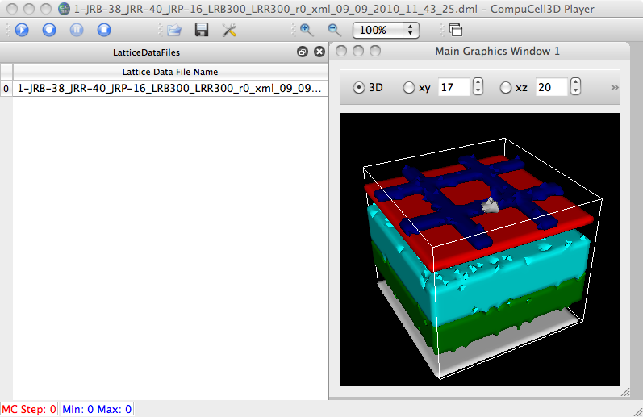

Trying to document the pain in building on BigRed. Some of the issues involve older gcc, older Python, pre-built VTK, etc.
----------- first, my environment --------------
heiland@BigRed:~/dev/Abbas> more ~/.soft
#
# This is the .soft file.
# It is used to customize your environment by setting up environment
# variables such as PATH and MANPATH.
# To learn what can be in this file, use 'man softenv'.
#
#
#+python-2.4.3_32
#+python-2.6.1_32
#+python-2.6.1_64
#+gcc-4.2.2
#+gcc-4.1.1
+cmake-2.6.4
+swig-1.3.29
#+vtk-5.0.3
##+vtk-5.0.2-64
#@namd-ibm-64
#+openmpi-1.2.6-gcc-64
#@globus-4.0
@bigred
---------------------
heiland@BigRed:~/dev/Abbas/cc3d-9-9-10> which gcc
/usr/bin/gcc
heiland@BigRed:~/dev/Abbas/cc3d-9-9-10> gcc --version
gcc (GCC) 3.3.3 (SuSE Linux)
Copyright (C) 2003 Free Software Foundation, Inc.
This is free software; see the source for copying conditions. There is NO
warranty; not even for MERCHANTABILITY or FITNESS FOR A PARTICULAR PURPOSE.
heiland@BigRed:~/dev/Abbas/cc3d-9-9-10> which swig
/N/soft/linux-sles9-ppc64/swig-1.3.29/bin/swig
heiland@BigRed:~/dev/Abbas/cc3d-9-9-10> swig -version
SWIG Version 1.3.29
Compiled with g++ [powerpc64-unknown-linux-gnu]
heiland@BigRed:~/dev/Abbas> env|grep -i vtk
VTK_DIR=/N/u/heiland/BigRed/dev/VTK-build-py2.3
---------------------
I copied over the cc3D source from Abbas's dir (because /N/dc was VERY slow and because I knew I'd likely be making
edits to the source):
heiland@BigRed:~/dev/Abbas/cc3d-src/> cp -R /N/dc/projects/Compucell3D/Abbas_Shirinifard_CC3D/3-4-2-branch-source .
then the build begins...
heiland@BigRed:~/dev/Abbas/cc3d-9-9-10> cmake -DCMAKE_INSTALL_PREFIX:PATH=~/dev/Abbas/cc3d-9-9-10 ~/dev/Abbas/cc3d-src/3-4-2-branch-source
...
make
...
/N/u/heiland/BigRed/dev/Abbas/cc3d-src/3-4-2-branch-source/core/PublicUtilities/Vector3.h:EOF: Error: Missing #endif for conditional starting on line 1
make[2]: *** [core/pyinterface/CompuCellPython/CompuCellPYTHON_wrap.cxx] Error 1
--> just insert a newline after the #endif
[100%] Swig source
/N/u/heiland/BigRed/dev/Abbas/cc3d-src/3-4-2-branch-source/core/pyinterface/Example/PyNewPlugin.h:EOF: Error: Missing #endif for conditional starting on line 1
make[2]: *** [core/pyinterface/Example/ExamplePYTHON_wrap.cxx] Error 1
--> add newline at end
-----------------------
Eventually discover that we need to avoid MolecularContact plugin (because it tries to use some low-level
Python stuff and due to an old Python on BigRed, get problems with header, etc):
Commenting out the MolecularContact plugin:
heiland@BigRed:~/dev/Abbas/cc3d-src/3-4-2-branch-source/core/CompuCell3D/plugins> vi CMakeLists.txt
#ADD_SUBDIRECTORY(MolecularContact)
and:
heiland@BigRed:~/dev/Abbas/cc3d-src/3-4-2-branch-source/core/pyinterface/CompuCellPython> vi CMakeLists.txt
# MolecularContactShared
Get rid of ALL attempted uses of MolecularContact plugin wrapping in the swig files!!
heiland@BigRed:~/dev/Abbas/cc3d-src/3-4-2-branch-source/core/CompuCell3D/plugins> vi CMakeLists.txt
-->
#ADD_SUBDIRECTORY(MolecularContact)
heiland@BigRed:~/dev/Abbas/cc3d-src/3-4-2-branch-source/core/pyinterface/CompuCellPython> grep larconta *
CMakeLists.txt:# MolecularContactShared
CompuCellExtraDeclarations.i:#define MOLECULARCONTACT_EXPORT
CompuCellExtraDeclarations.i://MolecularContactPlugin
CompuCellExtraDeclarations.i:%include <CompuCell3D/plugins/MolecularContact/MolecularContactPlugin.h>
--->
heiland@BigRed:~/dev/Abbas/cc3d-src/3-4-2-branch-source/core/pyinterface/CompuCellPython> vi CompuCell.i
//#define MOLECULARCONTACT_EXPORT
CompuCellExtraDeclarations.i:
//#define MOLECULARCONTACT_EXPORT
...
//%include <CompuCell3D/plugins/MolecularContact/MolecularContactPlugin.h>
/* %nothread MolecularContactPlugin */
/* %template (moleculemapaccessor) BasicClassAccessor<MoleculeNameMap_t>; //necessary to get MolecularContactPlugin accessor working */
/* %template (molecularlcontactMapPyItr) STLPyIterator<std::map<CompuCell3D::MolecularContactData> >; */
/* %template (molecularlcontactDataSet) std::map<CompuCell3D::MolecularContactData>; //necessary to get basic map functionality working */
/*
%inline %{
MolecularContactPlugin * getMolecularContactPlugin(){
return (MolecularContactPlugin *)Simulator::pluginManager.get("MolecularContact");
}
%}
*/
CompuCellExtraIncludes.i://#include <CompuCell3D/plugins/MolecularContact/MolecularContactPlugin.h>
----------------------------------------------------------------
heiland@BigRed:~/dev/Abbas/cc3d-9-9-10> ty runScript.sh
current_directory=$(pwd)
export PREFIX_CC3D=/N/u/heiland/BigRed/dev/Abbas/cc3d-9-9-10
export VTK_DIR=/N/u/heiland/BigRed/dev/VTK-build-py2.3
# following dir contains _CompuCell.so
# core/pyinterface/CompuCellPython
cd $PREFIX_CC3D
export LD_LIBRARY_PATH=${VTK_DIR}/bin
export COMPUCELL3D_PLUGIN_PATH=${PREFIX_CC3D}/lib/CompuCell3DPlugins
export COMPUCELL3D_STEPPABLE_PATH=${PREFIX_CC3D}/lib/CompuCell3DSteppables
export LD_LIBRARY_PATH=${PREFIX_CC3D}/lib:$LD_LIBRARY_PATH
export LD_LIBRARY_PATH=${PREFIX_CC3D}/lib/python:$LD_LIBRARY_PATH
#export LD_LIBRARY_PATH=${PREFIX_CC3D}/core/pyinterface/CompuCellPython:$LD_LIBRARY_PATH
export LD_LIBRARY_PATH=${COMPUCELL3D_PLUGIN_PATH}:$LD_LIBRARY_PATH
export LD_LIBRARY_PATH=${COMPUCELL3D_STEPPABLE_PATH}:$LD_LIBRARY_PATH
echo "LD_LIB_PATH = $LD_LIBRARY_PATH"
export SWIG_LIB_INSTALL_DIR=${PREFIX_CC3D}/lib/python
#export PYTHON_MODULE_PATH=${PREFIX_CC3D}/pythonSetupScripts:${PREFIX_CC3D}/core/pyinterface/CompuCellPython
export PYTHONPATH=${PREFIX_CC3D}/pythonSetupScripts:${PREFIX_CC3D}/core/pyinterface/CompuCellPython:$PYTHONPATH
export PYTHON_MODULE_PATH=.
export COMPUCELL3D_MAJOR_VERSION=3
export COMPUCELL3D_MINOR_VERSION=4
export COMPUCELL3D_BUILD_VERSION=2
export SOSLIB_PATH=${PREFIX_CC3D}/examplesSoslib
echo "CompuCell3D - version $COMPUCELL3D_MAJOR_VERSION.$COMPUCELL3D_MINOR_VERSION.$COMPUCELL3D_BUILD_VERSION"
python ${PREFIX_CC3D}/player/CompuCellPythonSimulationCML.py $* --currentDir=${current_directory}
cd ${current_directory}
----------------------------------------------------------------
heiland@BigRed:~/dev/Abbas/cc3d-9-9-10> runScript.sh -i Demos/cellsort_2D/cellsort_2D.xml
... (get this error in different places; due to different APIs in different Pythons)
Traceback (most recent call last):
File "/N/u/heiland/BigRed/dev/Abbas/cc3d-9-9-10/player/CompuCellPythonSimulationCML.py", line 111, in ?
traceback_message=traceback.format_exc()
AttributeError: 'module' object has no attribute 'format_exc'
-->
#traceback_message=traceback.format_exc()
traceback_message=traceback.format_exception(sys.exc_type, sys.exc_value, sys.exc_traceback)
----------------------------------------------------------------
/N/u/heiland/BigRed/dev/Abbas/cc3d-9-9-10/pythonSetupScripts/CMLFieldHandler.py
#class CMLFieldHandler():
class CMLFieldHandler:
following had a tab, change to spaces:
if (_mcs % 100): return # only dump modulo N mcs steps
----------------------------------------------------------------
heiland@BigRed:~/dev/Abbas/cc3d-9-9-10> nm /N/u/heiland/BigRed/dev/Abbas/cc3d-9-9-10/core/pyinterface/CompuCellPython/_CompuCell.so | grep -i molecularcontact
----------------------------------------------------------------
heiland@BigRed:~/dev/Abbas/cc3d-9-9-10> runScript.sh -i /N/u/heiland/BigRed/dev/Abbas/model/1-JRB-38_JRR-40_JRP-16_LRB300_LRR300_r0_SimData/1-JRB-38_JRR-40_JRP-16_LRB300_LRR300_r0.xml
...
heiland@BigRed:~/dev/Abbas/cc3d-9-9-10> ls ../model/
1-JRB-38_JRR-40_JRP-16_LRB300_LRR300_r0_SimData/
heiland@BigRed:~/dev/Abbas/cc3d-9-9-10> ls ../model/1-JRB-38_JRR-40_JRP-16_LRB300_LRR300_r0_SimData/
1-JRB-38JRR-40JRP-16LRB300LRR300r0_08092010_10_50_10.txt 40x40-OuterRetina-BrM-CC.txt* angio_growth_steppables_08092010_10_50_10.py*
1-JRB-38_JRR-40_JRP-16_LRB300_LRR300_r0.xml* angio_growth_08092010_10_50_10.py* angio_growth_steppables_08092010_10_50_10.pyc
1-JRB-38_JRR-40_JRP-16_LRB300_LRR300_r0_xml_09_09_2010_11_02_34/ angio_growth_plugins_08092010_10_50_10.py*
1-JRB-38_JRR-40_JRP-16_LRB300_LRR300_r0_xml_09_09_2010_11_43_25/ angio_growth_plugins_08092010_10_50_10.pyc
heiland@BigRed:~/dev/Abbas/cc3d-9-9-10> ll ../model/1-JRB-38_JRR-40_JRP-16_LRB300_LRR300_r0_SimData/1-JRB-38_JRR-40_JRP-16_LRB300_LRR300_r0_xml_09_09_2010_11_43_25/
total 1360
-rw-r--r-- 1 heiland uits 1382821 2010-09-09 11:43 1-JRB-38_JRR-40_JRP-16_LRB300_LRR300_r0_xml_09_09_2010_11_43_25_000000.vtk
-rw-r--r-- 1 heiland uits 1082 2010-09-09 11:43 1-JRB-38_JRR-40_JRP-16_LRB300_LRR300_r0_xml_09_09_2010_11_43_25.dml
We copy the .dml and .vtk files back to a laptop to display via cc3D:
